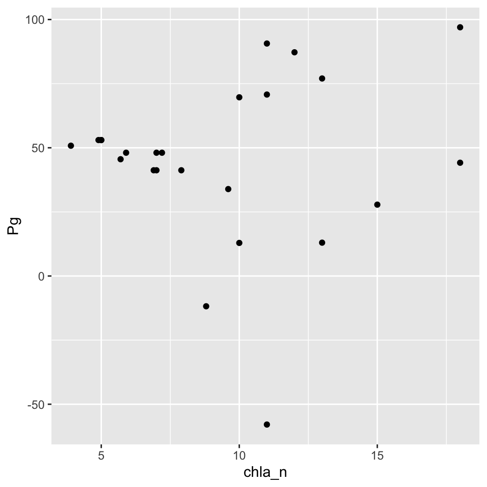

Get the lesson R script: understanding.R
Get the lesson data: download zip
This lesson will teach you how to begin evaluating estuary metabolism estimates using additional data available in SWMP. Our goals are to understand the tools that are available in R, and the tidyverse in particular, to combine and explore relationships among variables that could influence metabolism. These tools are the building blocks of more detailed analyses that will help you understand site-specific relationships or to develop more comprehensive comparisons between reserves.
By the end of this lesson, you should know how or find the resources to be able to do the following:
The SWMPr and WtRegDO packages provide a set of easy to use functions for working with SWMP data to estimate metabolism. Our goals so far have been to demonstrate how to use the pre-existing functions to evaluate metabolism in our example datasets.
What we have not covered is how to use the other tools available in R to create some more customized examples of data analyses. This is obviously a huge topic that we cannot adequately cover in 90 minutes. However, our goal today is to provide you with some general building blocks for developing some more specific analyses. We’ll be leveraging some of the other packages in the tidyverse to accomplish this goal.
We start with our detided dissolved oxygen data from Apalachicola. Check out the detiding to review to see how we got these data. For sake of time, you can import this data file from the website:
load(url('https://tbep-tech.github.io/ecometab-r-training/data/apadtd.RData'))
head(apadtd)## DateTimeStamp Temp Sal DO_obs ATemp BP WSpd Tide metab_date
## 1 2017-01-01 00:00:00 15.9 22.1 9.0 15.7 1020 4.8 1.88 2016-12-31
## 2 2017-01-01 01:00:00 15.9 22.1 9.0 16.9 1019 5.3 1.90 2016-12-31
## 3 2017-01-01 02:00:00 15.9 22.2 9.0 18.3 1018 3.9 1.94 2016-12-31
## 4 2017-01-01 03:00:00 16.0 23.4 8.6 19.0 1018 4.6 2.00 2016-12-31
## 5 2017-01-01 04:00:00 16.0 23.5 8.5 19.5 1018 5.0 2.01 2016-12-31
## 6 2017-01-01 05:00:00 16.1 23.6 8.4 19.4 1018 4.2 2.01 2016-12-31
## solar_period solar_time day_hrs dec_time hour Beta2
## 1 sunset 2016-12-31 22:51:56 10.27807 -365.0000 0 -0.661774387
## 2 sunset 2016-12-31 22:51:56 10.27807 -364.9583 1 -0.197013200
## 3 sunset 2016-12-31 22:51:56 10.27807 -364.9167 2 0.035692964
## 4 sunset 2016-12-31 22:51:56 10.27807 -364.8750 3 -0.002937492
## 5 sunset 2016-12-31 22:51:56 10.27807 -364.8333 4 -0.187566704
## 6 sunset 2016-12-31 22:51:56 10.27807 -364.7917 5 -0.406850558
## DO_prd DO_nrm
## 1 8.821057 8.953471
## 2 8.714655 8.760363
## 3 8.657867 8.653582
## 4 8.625646 8.635960
## 5 8.583420 8.655840
## 6 8.534384 8.677753For this exercise, we’ll assume the detided data is appropriate for estimating metabolism. Remember, in practice you’ll want to check out the data with evalcor and evaluate the metabolism results with meteval.
We estimate metabolism as follows, using the detided dissolved oxygen data:
tz <- attr(apadtd$DateTimeStamp, which = 'tzone')
lat <- 29.6747
long <- -85.0583
apaeco <- WtRegDO::ecometab(apadtd, DO_var = "DO_nrm", tz = tz, lat = lat, long = long)
head(apaeco)## Date Pg Rt NEM
## 2016-12-31 2016-12-31 NA NA NA
## 2017-01-01 2017-01-01 37.24182 -61.00250 -23.760676
## 2017-01-02 2017-01-02 25.11674 -54.98618 -29.869439
## 2017-01-03 2017-01-03 27.53471 -32.50418 -4.969470
## 2017-01-04 2017-01-04 33.89419 -28.49020 5.403988
## 2017-01-05 2017-01-05 27.90777 -15.80833 12.099438The WtRegDO package has a plotting function that lets you view the metabolism results. This function lets you view the daily estimates or as aggregated summaries of the daily results. For follow-up analysis, it will be useful to understand how to plot the data using more general plotting functions. This will allow you to conduct your own analyses outside of the “pre-packaged” summaries in WtRegDO.
For plotting, we can use the ggplot2 library. This comes with the tidyverse, so no need to install it separately, but you’ll of course need to load the library.
library(ggplot2)With ggplot2, you begin a plot with the function ggplot(). This creates a coordinate system that you can add layers to. The first argument of ggplot() is the dataset to use in the graph. So ggplot(data = apaeco) creates an empty base graph.
ggplot(data = apaeco)The next step is to “map” variables in your dataset to the plot visual properties or “aesthetics” (i.e., x variable, y variable, etc.). The mapping argument is defined with aes(), and the x and y arguments of aes() specify which variables to map to the x and y axes. The functoin looks for the mapped variable in the data argument, in this case, apaeco.
ggplot(data = apaeco, aes(x = Date, y = Pg))Now we need to add a “geometry” or geom to the plot to add components for viewing. We can add one or more layers (aka geoms) to ggplot(). The function geom_point() adds a layer of points to your plot based on the variable mappings in the aes function.
ggplot(data = apaeco, aes(x = Date, y = Pg)) +
geom_point()We can also overlay a line using geom_line().
ggplot(data = apaeco, aes(x = Date, y = Pg)) +
geom_point() +
geom_line()Those are the basics of ggplot. This structure may seem weird at first, but it’s design is purposeful and easily extendable. Just remember these requirements:
ggplot functionThe daily data are a bit messy, so maybe we want to aggregate to averages before plotting to make the trends a little more apparent. We need to use a few functions from the lubridate and dplyr packages to do this. As before, these come with the tidyverse package.
The lubridate package provides a set of functions to quickly modify date and time objects in R. It provides many functions to convert R vectors to date objects (e.g., a character strings of dates imported from a csv) and many functions to extract components of date objects (e.g., month, day, etc.). The latter is extremely useful for analysis.
First we load the lubridate and dplyr packages. Then we use both to create a month column from our existing date column in the apaeco data set. The mutate function from dplyr adds a column to our dataset and the month function extracts the month from the existing date column.
library(lubridate)
library(dplyr)
apasum <- mutate(apaeco, mo = month(Date))
head(apasum)## Date Pg Rt NEM mo
## 2016-12-31 2016-12-31 NA NA NA 12
## 2017-01-01 2017-01-01 37.24182 -61.00250 -23.760676 1
## 2017-01-02 2017-01-02 25.11674 -54.98618 -29.869439 1
## 2017-01-03 2017-01-03 27.53471 -32.50418 -4.969470 1
## 2017-01-04 2017-01-04 33.89419 -28.49020 5.403988 1
## 2017-01-05 2017-01-05 27.90777 -15.80833 12.099438 1We can plot the monthly values as boxplots with ggplot using the geom_boxplot geometry.
ggplot(apasum, aes(x = mo, y = Pg, group = mo)) +
geom_boxplot()Or, if we want to summarize the raw data, we can use the dplyr group_by() and summarise() functions. Here we are grouping the data by month, then taking the average production values. Note the use of na.rm = T in the mean function.
apasum <- group_by(apasum, mo)
apasum <- summarise(apasum, meanpg = mean(Pg, na.rm = T))Then we plot as before using geom_point() and geom_line().
ggplot(apasum, aes(x = mo, y = meanpg)) +
geom_point() +
geom_line()Now repeat some of the above analyses using the Sapelo Island metabolism data.
Load the detided Sapelo Island data (sapdtd) using this code:
load(url('https://tbep-tech.github.io/ecometab-r-training/data/sapdtd.RData'))Estimate metabolism using the ecometab function from the WtRegDO package. Run WtRegDO::ecometab using tz = 'America/Jamaica', lat = 31.39, and long = -81.28.
Create a month variable for sapdtd using the mutate and month functions.
Group the data by month and summarize the average production using group_by and summarise.
Plot the results with ggplot by mapping the month and mean production columns to the x, y aesthetics and then using geom_point() or geom_line()
One of the values of SWMP data is that we get a lot of supporting information that we can use to describe water quality changes. For metabolism, we might expect that it tracks physical drivers like temperature or light energy, or perhaps nutrient inputs. We can combine the metabolism estimates with other sWMP parameters to evaluate these hypotheses.
We can load SWMP data as before using tools from SWMPr, in particular using the import_local, qaqc, and comb functions. We’ve already done this a few times for the dry bar station at Apalachicola (see the “data prep” section in the metabolism lesson). Our detided dataset from above includes some relevant water quality and weather data that we can evaluate.
For example, perhaps we want to compare water temperature to metabolism. Since our metabolism estimates are on the daily scale, we’ll also want to summarize our water quality data at this scale. We can use tools in the lubridate and dplyr packages to do this, just as above.
We can add a date column, group by day, then take average water temperature.
# add a date column
apasum <- mutate(apadtd, Date = date(DateTimeStamp))
# group by date
apasum <- group_by(apasum, Date)
# summmarise average water temperature
apasum <- summarise(apasum, meantemp = mean(Temp, na.rm = T))The last thing to do is to join these summarized data with the metabolism results. For this, we can use a “join” function from dplyr. We tell the inner_join function to combine the datasets using the Date column that is included in both the summarized water quality data and metabolism results.
# join water quality with metabolism
apasum <- inner_join(apasum, apaeco, by = 'Date')Now we’re ready to plot. We can make a quick scatterplot with ggplot by mapping the appropriate variables in our dataset to the x, y aesthetics. Temperature is our independent variable in this case, so we put it on the x-axis.
p <- ggplot(data = apasum, aes(x = meantemp, y = Pg)) +
geom_point()
pNot much there, so maybe we can want to try exploring some other relationships.
Repeat the above examples using the Sapelo Island dataset.
First, estimate metabolism for the Sapelo Isalnd data. You should have this already from the first exercise. Here it is again:
load(url('https://tbep-tech.github.io/ecometab-r-training/data/sapdtd.RData'))
sapeco <- WtRegDO::ecometab(sapdtd, DO_var = 'DO_nrm', lat = 31.39, long = -81.28, tz = 'America/Jamaica')From the detided Sapelo Island dataset, create a date column with the mutate and date functions.
Summarize mean daily water temperature using group_by and summarise.
Join the summarized data with the metabolism data using inner_join and by = 'Date'.
Make a scatterplot in ggplot by mapping the mean temperature and production summaries to the x, y aesthetics.
Our last example showed that we couldn’t find a very strong relationship of water temperature with production. That’s okay. We had a hypothesis, checked hte data, and then made a general conclusion that temperature isn’t a strong driver of production at the Apalachicola dry bar site. This doesn’t mean temperature isn’t always important - the limited data we have and our analysis at the daily scale provides us with some clues, but there’s much more we can evaluate.
Now we have the tools to start looking at some additional datasets. Another reasonable expectation is that metabolism may be driven by nutrients. We can us the same tools above to import, combine, and evaluate relationships of metabolism with nutrients.
Let’s import nutrient data from the dry bar station using import_local from SWMPr.
apadbnut <- import_local(path = 'data', station_code = 'apadbnut')We can use the qaqc function as before to handle the QA/QC flags.
apadbnut <- qaqc(apadbnut, qaqc_keep = c('0', '1', '2', '3', '4', '5'))
head(apadbnut)## datetimestamp po4f nh4f no2f no3f no23f chla_n
## 1 2017-01-04 11:31:00 NA 0.008 NA NA NA 9.6
## 2 2017-02-06 11:20:00 NA 0.024 NA NA 0.140 8.8
## 3 2017-02-28 13:15:00 NA 0.016 NA NA 0.270 11.0
## 4 2017-04-11 09:12:00 0.005 0.005 NA NA 0.045 18.0
## 5 2017-05-02 10:29:00 NA 0.003 NA NA 0.033 11.0
## 6 2017-06-08 12:20:00 NA 0.022 NA NA 0.089 10.0If we want to compare any of the nutrient data to metabolism, we need to aggregate the information at a time scale that allows comparison. The metabolism results are daily, but the nutrient data are collected monthly.
We can first try joining the nutrient data to metabolism by day. First we need to create a date column for the nutrients.
apadbnut <- mutate(apadbnut, Date = date(datetimestamp))Now we can join by date. We use inner_join to combine by dates that are shared between the two datasets.
apajoin <- inner_join(apaeco, apadbnut, by = 'Date')We can now plot the metabolism estimates against the various nutrient observations. Here’s an example looking at chlorophyll.
ggplot(apajoin, aes(x = chla_n, y = Pg)) +
geom_point()
Again, not super interesting. As a final attempt at comparing these data, we can try averaging results to a common unit of time, such as month. This may reduce some of the variability in the data and also provide a more general comparison by evaluating average conditions as opposed to “instantaneous” comparisons at the daily scale.
For both the metabolism and nutrient data, we can “floor” the dates to the first of each month, group by date, then summarize average values. Although technically we’re changing the dates, we are retaining the date class in the date column which can sometimes help with plotting or other downstream analysis. We use the floor_date function from lubridate.
# floor nutrient dates
apadbnut <- mutate(apadbnut,
dateflr = floor_date(Date, unit = 'month')
)
# floor metabolism dates
apaeco <- mutate(apaeco,
dateflr = floor_date(Date, unit = 'month')
)Then group by the floored dates, summarize to averages, and join the data.
# group by and summarize apadbnut
apadbnut <- group_by(apadbnut, dateflr)
apadbnut <- summarise(apadbnut,
chla_n = mean(chla_n, na.rm = T),
nh4f = mean(nh4f, na.rm = T)
)
# group by and summarize metabolism
apaeco <- group_by(apaeco, dateflr)
apaeco <- summarise(apaeco,
Pg = mean(Pg, na.rm = T),
Rt = mean(Rt, na.rm = T),
NEM = mean(NEM, na.rm = T)
)
# join
apajoin <- inner_join(apaeco, apadbnut, by = 'dateflr')Now plot as before. Here we’re looking at average Production vs chlorophyll using the monthly summaries.
ggplot(apajoin, aes(x = chla_n, y = Pg)) +
geom_point()Repeat the above examples using the Sapelo Island dataset.
sapdcnut station using import_local and qaqc.mutate from dplyr and date from lubridate.sapeco from exercise 2) usingunit = 'month' with floor_date from lubridate.group_by and summarise. For the summaries, take the average of the metabolism estimates and any of the nutrient parameters of your choosing.inner_join() to combine the datasets by the floored date column.